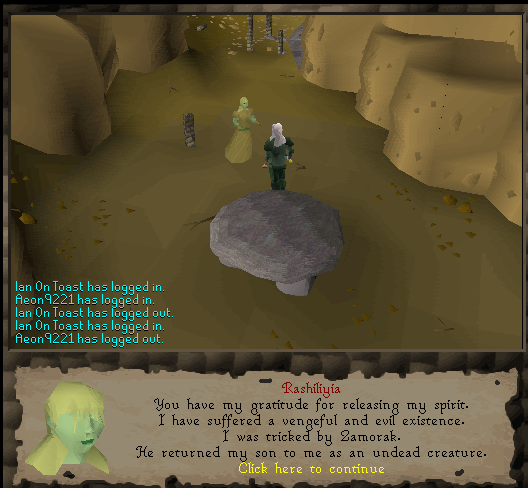
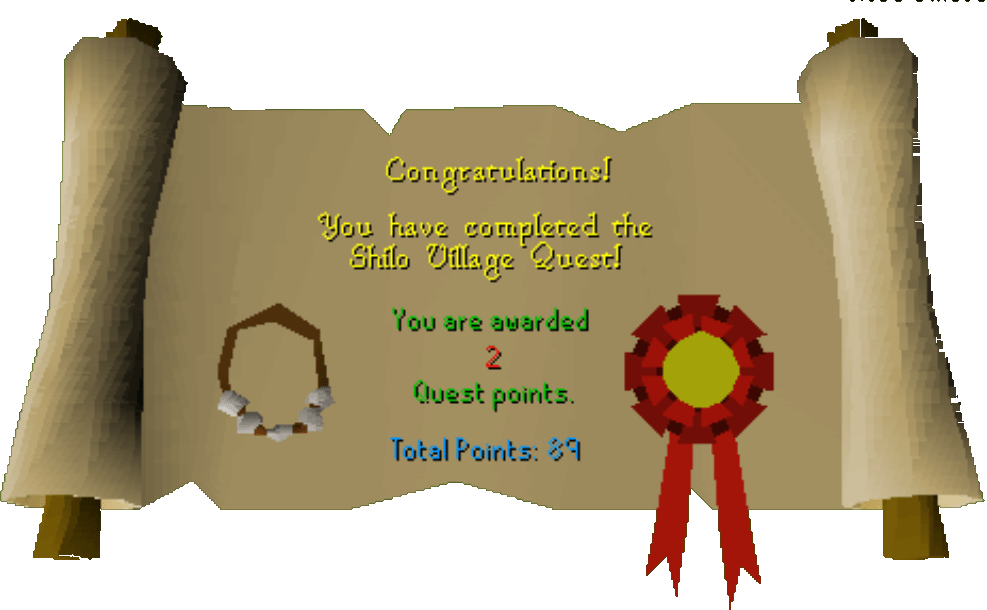

Shilo Village
Description: New areas in the Southern part of Karamja Island have been discovered with a mysterious village. Who knows what hidden treasures exist, and what dangers lurk to guard them?Difficulty: Experienced
Length: Long
Required Quests:
- Jungle Potion
- Druidic Ritual
Items & Skills Needed:
- 32 Agility
- 20 Crafting
- or
- The ability to kill a level 91, 68, and 93 monster in a row
Recommended:
- Decent armour and a weapon
- Good food
Reward: 2 Quest points, 3,875 Crafting XP, ability to get into Shilo Village, ability to quick travel to Shilo Village using the cart near the Brimhaven docks, ability to mine the gem rocks in Shilo Village mine, up to 2,000 coins if you sell every item you obtained during the quest
Instructions:
Talk to Mosol and he will tell you about Rashiliyia. She has brought a plague of Undead upon the village. Ask him what you can do. He will say you need to find Trufitus, the man you spoke to in the Jungle Potion quest. He will also give you a Wambum belt.
Trufitus is located north of this village. After you have found him, talk to him and tell him about Rashiliyiaand that she has returned. Give him the belt and ask ALL the questions; otherwise, you can't proceed to the next part. He will tell you about the Legend and the Temple of Ah-za rhoon. Tell him that you will search the temple.
The temple is located east of Trufitus' house. Head east until you see a river. Now head south until you see a log. Walk across it and go south. You will see a Mound of Earth. Warning: There are many level 60 undead in this cave! Search it and use the spade on it, after that use your candle on it. Finally use rope. Then search again to drop down.
Walk south a short distance, and you will find a cave-in. After you have found it, search it and wriggle through.
Walk north and you will find some loose rocks on the northwest corner. Search them and you will find a Tattered Scroll. Keep it.
Walk southeast until you find a small room. Search the old sacks and you will get a Crumpled Scroll. Keep it.
Walk north and you will see an Ancient gallows. Search it and you will get a Zadimus' Corpse. Keep it.
Go back to the first cave. Try to craft the table into a raft. You'll notice there isn't enough wood. Walk southeast and you will find a waterfall. Search it and climb up (It doesn't matter if you fall.)
Return to Trufitus and give him all the items (use the items on him). He will tell you to bury the corpse in front of the Tribal Statue. After talking to him, read all the scrolls.
Bury the corpse in front of the statue. Zadimus will appear and give you a Bone Shard. Give this to Trufitus. He will tell you about a tomb.
The tomb is located southwest of the house (Next to Shilo Village, but before you reach it, you'll need to climb some rocks and cross a bridge.) After you have found the rocks, climb them and cross the river. If you failed, try again.
After you crossed the bridge, head a bit north and search the rock. You will drop down.
Head south and you will see a dolmen. Search it and you will get a sword pommel, a locating crystal and Bervirius notes. Go to the east room of this tomb and climb the rocks to go back out.
Return to Trufitus and give him all the items. He will tell you that you will need a bronze necklace.
Go a bit northwest of the house. You will find an anvil. You will need a chisel, a hammer, and a bronze bar. If you don't, go the shop and buy them. The shop is located south of this anvil.
Use the bronze bar on the anvil and make a bronze wire. Use chisel on the sword pommel. Finally use the beads on the bronze wire. You will get an amulet called "Beads of the Dead." Show this to Trufitus.
Before doing step 18, equip your armor, bring some food, recharge your prayer points, and probably bring some potions.
Go east of the house. Find the log that you have crossed before. Cross it and go north a bit. Find a palm tree that you can search. After you have found it, search the palm tree and a door will appear. Use your chisel on the bone shard and you will craft it into a key. Wear your Beads of the Dead amulet and use the key on the doors to get in.
Go south and open the gate. Climb the rocks and go west. You will find a door. Use 3 bones on the door and the door will open.
Make sure you wear all your armor, your weapon, and the Beads of the Dead, and that you have full health. Search the dolmen and a level 86 zombie will attack you. Defeat it and a 65 level skleton will attack you. Kill it, and a level 88 ghost will appear. Defeat it. WARNING: DO NOT RETREAT OR YOU WILL HAVE TO START AGAIN. After defeating all the monsters, search the dolmen and take Rashiliyia's corpse.

Go back to the room you came from. Use your bone key on the Tomb Exit to get out.
To finish the quest, return to the tomb where you previously found the blue scroll, by climbing the rocks and crossing the bridge. Just use the corpse on the dolmen. Well done—quest complete!
Congratulations, Quest Complete!

This quest guide was written by henry-x, |[Dracon]|, and Swaty. Thanks to DRAVAN, Koppen, and L3tHaL_LeAdA_ for corrections.
This quest guide was entered into the database on Wed, Mar 10, 2004, at 10:09:44 PM by Wiz-Master and CJH and was last updated on Mon, Aug 02, 2004, at 08:41:24 AM.